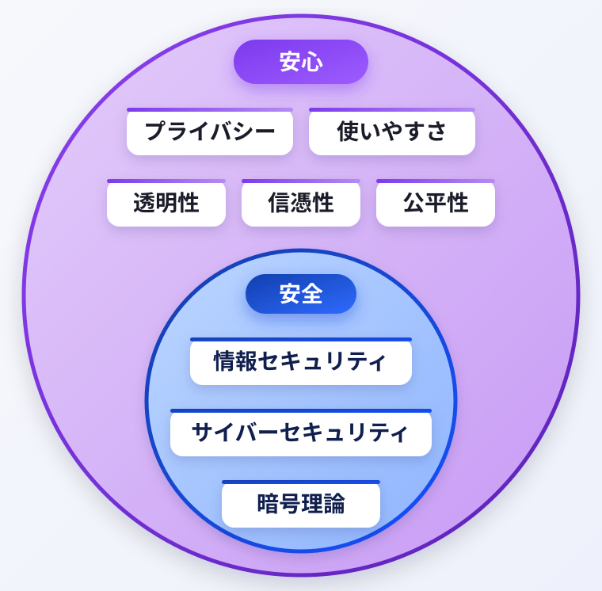

計算機ソフトウェア研究室 セキュリティゼミ
人と社会のための情報セキュリティ研究
情報化社会の進展に伴い、情報セキュリティの重要性はますます高まっています。なかでもフィッシング攻撃は手口が巧妙化し、社会的被害も拡大しており、従来型の対策では十分な効果を得ることが困難です。当研究室では、企業との連携を通じて、フィッシング攻撃の構造的な分析に基づいた抜本的対策の確立を目指しています。
さらに、慢性的に不足しているサイバーセキュリティ人材の育成にも力を入れており、理論と実践を融合した教育・研究活動を通じて、次世代の技術者の輩出を推進しています。
私たちの研究は、「安全」だけでなく「プライバシー」「透明性」「公平性」といった観点も重視し、ユーザーが安心してWebサービスを利用できる社会の構築を支援します。技術的なアプローチに加えて、ゲーム理論や社会科学的視点を取り入れることで、多面的かつ持続可能なソリューションの創出を目指しています。

Explore
News
Links